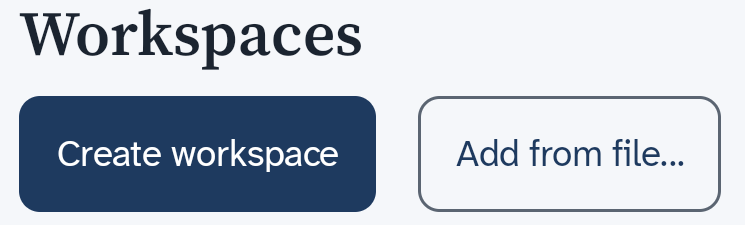
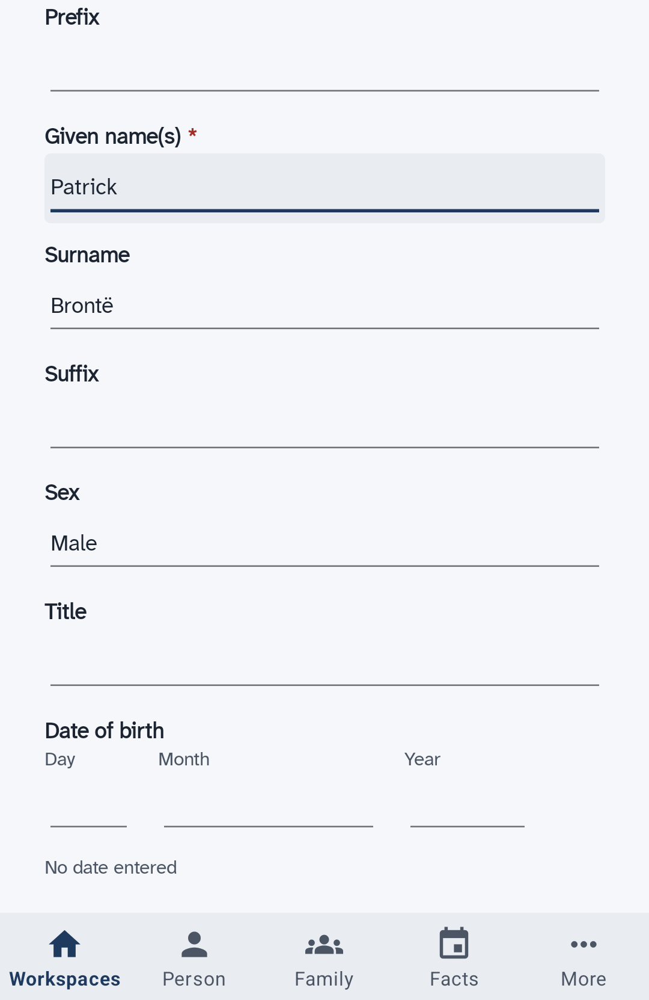
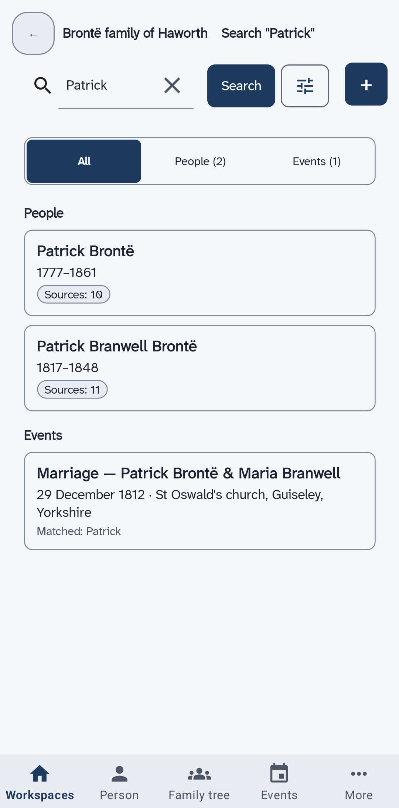

Quick Start
Six short pages that take you from opening uFTi to your first person, with its source and a copy.
This takes about ten minutes. Each page has a few steps. Do them in order.
Understanding family tree information
Oughtibridge Ltd
© 2026 Oughtibridge Ltd
This publication is available at https://docs.ufti.com/android-phone/Alpha-1/start/
Six short pages that take you from opening uFTi to your first person, with its source and a copy.
This takes about ten minutes. Each page has a few steps. Do them in order.
Open uFTi for the first time.
A workspace is one family tree.
The Workspaces screen opens.
This is where your trees live. You may see some sample workspaces already. You do not need them.

Next: Add your first person.
Make your own workspace and add yourself, or someone you know well.
That is your first person. uFTi saves your work as you go.

Next: Look around.
See what the five places in the bar and the search box do for the person you added.
Add a person first.
The bar along the bottom of the screen shows the main places. Most of them show the person you are looking at.
To go back one screen, choose the back arrow at the top left.

Next: Say where you found it.
Add a source to a fact, so you always know why you believe it.
Open the page of a person who has a birth date.
To find a person, type their name in the search box and choose Search. Then choose the card with their name.
The fact now has a source. Later, when two records disagree, this is how you will know what to believe.
Next: Keep it safe.
Save a copy of your tree as a file, and keep it somewhere else too.
You now have a copy. Make a new one after you add a lot. To email it, find it in the Files app. Keep a copy off your phone or tablet too.
Next: What next.
You have a tree, a person, a fact with its source and a copy, so choose where to go from here.
Well done. What do you want to do now?
The five ideas behind uFTi, in two minutes.
You can have more than one. Each shows as a card on the Workspaces screen. Make a new workspace for each tree.
Add a person for each relative. A family joins a couple. uFTi draws a tree from your families. Choose Family to see it.
A fact is something you record, such as a birth with its date. A source is where you found it. It can be a certificate, a census page, or what someone told you. A small chip beside each heading on a person's page counts the sources. Choose the chip to add one. Then you will always know why you believe a fact.
uFTi saves your work as you go. To keep a copy, choose Save as… on your workspace's card. Keep the file somewhere else too. Do it again after a big session.
Look in this guide when you are stuck. Use its search box, and type the words you would say. Practise in a workspace you make for the purpose.
Something you record about a person, such as a birth with its date and place.
A GEDCOM file that holds a whole family tree, with its people, families, facts, sources and research notes. It does not hold pictures or other attached files. You can open one, save one and send one.
The standard format for family tree files. Many family tree programs read it. GEDCOM 5.5.1 was published in 1999. It has been the common format for more than twenty years. GEDCOM 7, published in 2021, is the newer version. A version belongs to the standard, not to uFTi.
One file that holds a whole workspace. It has the family tree with its research notes, and the pictures and other files. It is the best way to save and send your work.
A family tree drawn for one person. It shows their parents above them, and their partners and children.
Where you found a fact. It can be a certificate, a census page, a book, or what someone told you.
One family tree and everything kept with it. That is the family tree file with its research notes, and the pictures and other files you attach. A GEDZIP file holds all of it. You can have more than one.